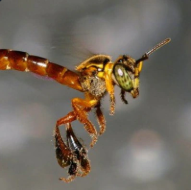
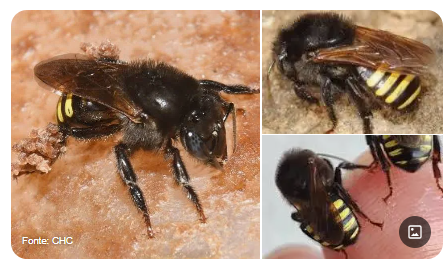
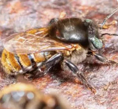
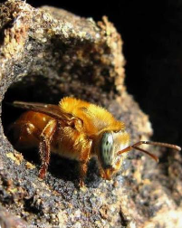
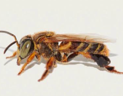
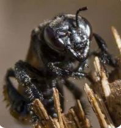
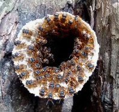
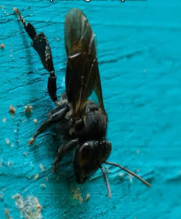
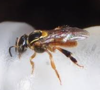
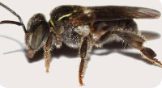

01 · MeliponiniReferências com fotos
Jataí
Tetragonisca angustula
Conhecer esta abelhaMata Atlântica · Serra do Mar · Litoral paranaense
Um catálogo para se aproximar das abelhas nativas sem ferrão: seus nomes, suas particularidades e sua presença na nossa região.
O catálogo
11 entradas

01 · MeliponiniReferências com fotos
Tetragonisca angustula
Conhecer esta abelha
02 · MeliponiniReferências com fotos
Melipona quadrifasciata quadrifasciata
Conhecer esta abelha
03 · MeliponiniReferências com fotos
Melipona bicolor
Conhecer esta abelha
04 · MeliponiniReferências com fotos
Melipona mondury
Conhecer esta abelha
05 · MeliponiniReferências com fotos
Tetragona clavipes
Conhecer esta abelha
06 · MeliponiniReferências com fotos
Scaptotrigona bipunctata
Conhecer esta abelha
07 · MeliponiniReferências com fotos
Scaptotrigona sp.
Conhecer esta abelha
08 · MeliponiniReferências com fotos
Cephalotrigona capitata
Conhecer esta abelha
09 · MeliponiniReferências com fotos
Plebeia emerina
Conhecer esta abelha
10 · MeliponiniReferências com fotos
Plebeia droryana
Conhecer esta abelha
11 · MeliponiniReferências com fotos
Plebeia remota
Conhecer esta abelhaNenhuma abelha encontrada. Tente outro nome popular ou científico.
Conhecimento com referência
O Catálogo Moure orienta os nomes científicos e os registros de distribuição. Cada ficha indica suas fontes e distingue registros no Paraná de registros específicos do litoral. Nomes populares podem variar entre localidades; a entrada mandaguari permanece com a espécie a confirmar.
Conheça as fontes e os créditosConhecer as abelhas é uma forma de se aproximar da Mata Atlântica. Explore o catálogo e acompanhe o trabalho do Meliponário Doce Morretes.